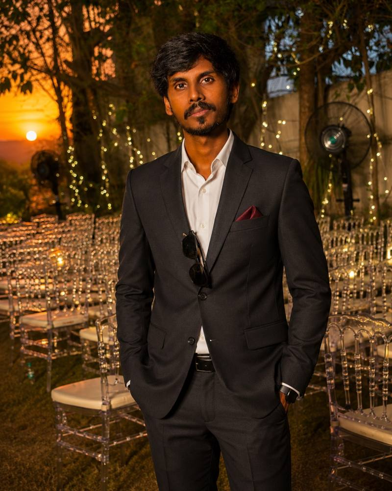

01AI CINEMATIC
Last Drop
Dystopian water-scarcity concept · AI film
SENIOR VIDEO EDITOR · AI CREATIVE
Senior Video Editor and AI Creative Artist crafting cinematic films, advertisements, documentaries, motion graphics and next-generation AI content.

SELECTED WORK
A curated selection of AI films, editorial storytelling, motion graphics, brand films, music and cinematic visual work.
Dystopian water-scarcity concept · AI film
Future environmental story · AI filmmaking
Mythological AI filmmaking and cinematic storytelling
Epic AI visual development
Way2News vertical storytelling
Event identity and campaign visuals
Cinematic event visual treatment
AI-generated editorial visual
Regional editorial branding
Newsroom graphics and visual systems
Presenter-led editorial graphics
Field storytelling and news video
Cinematic AI and VFX edit
High-impact political storytelling
Cinematic product storytelling
Premium Telugu title treatment
Telugu Christian worship music video
Animated wedding invitation
Epic mythological visual development
Celebrity interview and social storytelling
ABOUT ME
I'm Suggu Karthik, a Senior Video Editor and creative professional focused on turning complex ideas into clear, engaging visual experiences.
My work spans AI-generated films, documentaries, advertisements, podcasts, devotional and lyrical videos, cinematic trailers, motion graphics and social content.
I combine traditional editing instincts with modern AI tools to build faster, more cinematic workflows without losing the human story.
EXPERTISE
Story-driven edits, pacing, transitions, color and finishing.
Cinematic AI workflows, prompting, visual development and consistency.
Editorial graphics, explainers, typography and social-first design.
Songwriting, composition, AI music, voice and sound design.
EXPERIENCE
Way2News
LET'S CREATE
For collaborations, creative projects, video editing and AI content work.
Suggukarthik@gmail.com ↗